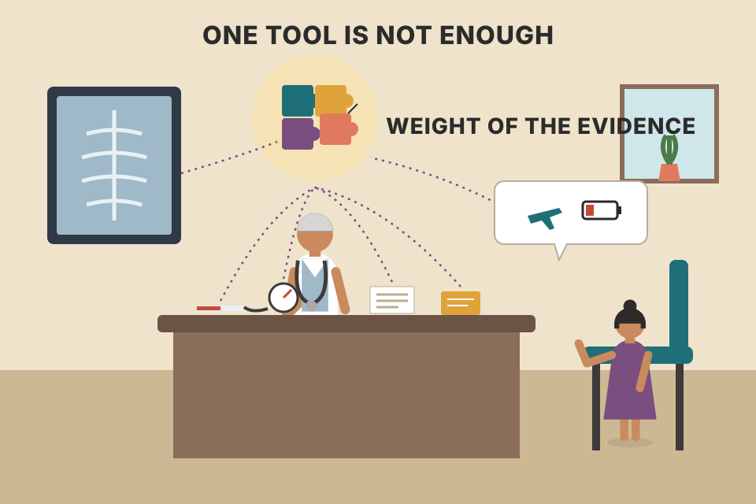

The last chapter. Murphy turns the whole book into 23 questions to ask about any market, then 8 more to ask before you trade, and closes with how technical and fundamental analysts can help each other, the profession behind the field, and why he thinks technical analysis is practised far more widely than its name suggests. The checklist below is interactive and each item links to the chapter page that teaches it. The only chart with simulated prices is in section 04; the price ladder in section 03 just draws the numbers you type.
The book has shown that technical analysis is a blend of many approaches, and each one adds to what you know about a market. Murphy compares it to a giant jigsaw puzzle where every tool holds one piece. His own approach is to combine as many techniques as possible. Each works better in some market conditions than others, and the skill is knowing which tools to lean on right now. That comes with knowledge and experience.
The approaches overlap and complement each other. The day you see how they connect, and treat technical analysis as the sum of its parts, is the day you deserve to be called a technical analyst. The checklist is there to help you cover every base, at least at first; later it becomes second nature. It isn't complete, but it holds most of the important factors. Good analysis is rarely about doing the obvious: the technician keeps hunting for clues, and the clue that finally tips the decision is often a small factor others have missed. The more factors you consider, the better your chance of finding it.
Each piece links to that chapter's page. (Chapters 1 and 3, the philosophy and chart construction, are the table the puzzle sits on: Ch.1, Ch.3.)

A doctor doesn't diagnose from the thermometer alone. Temperature, blood pressure, an X-ray and the patient's story each hold a piece. One odd reading that the others don't explain is often what cracks the case.
Why should more pieces help? Each tool is a noisy vote on direction. If the votes make independent mistakes, the mistakes tend to cancel and the majority is right more often than any single tool. That's the old jury result (Condorcet's theorem), not something Murphy states. The catch is the word independent. A 14-day RSI and a stochastic are both built from the same recent closes, so when one is fooled the other usually is too: adding it is closer to counting the same vote twice. Murphy's advice to keep hunting for the small, overlooked clue fits this: the most useful extra piece is one that draws on different information (volume, sentiment, another market), not another reading of the same closes.
A toy model, computed exactly (no random numbers). Each tool calls direction correctly with probability p. With probability overlap a tool just copies one shared signal (which is itself right with probability p); otherwise it makes its own independent call. You follow the majority, and ties count as a coin flip.
With each tool right 55% of the time, the majority of 9 independent tools is right about 62% of the time, and 25 independent tools about 69%. Raise overlap to 30% and 25 tools give about 59%; at 60% they give 55%, no better than one tool. The reason: with enough overlapping tools the majority simply becomes the shared signal, so its accuracy heads back to p however many tools you add. Practical reading: before adding an indicator to your checklist, ask what new information it uses.
Work through these for any market you're studying. Tick each question once you've answered it on your chart; the link takes you to the chapter page that teaches it. The "lean" column and the tally underneath are my addition (Murphy doesn't score the items); use them to see which way the evidence tilts. Your ticks are kept in this browser only.
A pilot's pre-flight checklist. It doesn't fly the plane or decide whether to take off; it makes sure nothing obvious is skipped on a busy day. Murphy says the same of his list: it helps you ask the right questions and, with practice, becomes second nature.
The order isn't random. It runs from the big picture to the detail: market and sectors (1–2), long-term charts (3), trend structure and the lines that define it (4–9), patterns and their targets (10–12), the mechanical indicators (13–15), sentiment (16), wave, ratio and time analysis (17–21), the computer's trend reading (22), and other chart types as a cross-check (23). (This grouping is my reading, not Murphy's. It is not the book's chapter order: the list opens with Chapter 18 and 17 material and ends with Chapters 11 and 12.)
backtest_results_summary.md lists the 200-day market filter as "the one consistent winner": a mechanical version of item 1.Once the checklist has led you to a bullish or bearish conclusion, Murphy wants you to answer these:
The checklist won't guarantee the right conclusion; it only helps you ask the right questions, and asking the right questions is the surest way to the right answers. The keys to successful trading are knowledge, discipline and patience. If you have the knowledge, the best way to get discipline and patience is to do your homework and have a plan of action. The final step is putting the plan to work. Even that won't guarantee success, but it greatly improves the odds of winning in the financial markets.
Murphy asks the questions; this calculator is my addition, using the fixed-fractional sizing rule from your trading_equations.md (equation 8). Its worked example is preloaded: ₹10,00,000 account, 1% risk, buy at ₹1,450, stop at ₹1,420, which gives 333 shares. The ₹1,510 target (a 2R objective) is my example, not from that file.
backtest_results_summary.md: fixed 1% risk sizing with ATR stops did as well as or better than volatility targeting.Technicians and fundamentalists are often at odds, but they can help each other, and analysis can start from either side. Murphy believes technical factors lead the known fundamentals, but also that any important market move must be caused by underlying fundamental factors. So a technician should have some awareness of a market's fundamental condition.
Murphy's own experience, from his years in the technical analysis department of a major brokerage firm: he'd often take a move that looked imminent on the charts to the firm's fundamental department and be told it could never happen. Quite often the same person was scrambling a couple of weeks later for fundamental reasons to explain the sudden, supposedly unexpected move. There's room for much more cooperation.
This chart is my illustration of Murphy's sentence about using a trend-following system as a filter. The fundamental analyst gets a bullish idea at regular intervals (triangles). The filter lets an idea through only while price is above its moving average; hollow triangles are ideas it blocks, because acting on them would mean buying against a falling trend. It shows how a filter works; on simulated prices it says nothing about whether filtering pays in real markets.
intraday_swing_playbook.md uses the same kind of filter: take longs only when Nifty is above its 200-day average (or halve size below it).Many people use technical analysis and offer opinions on markets. Are they qualified, and how would you know? Murphy's comparison:
| You wouldn't consult… | …without |
|---|---|
| a doctor | a medical degree on the wall |
| a lawyer | having passed the bar exam |
| an accountant | the accountant's credential (the book prints "CTA". Not in the book: CTA usually means Commodity Trading Advisor, so this is most likely a misprint for CPA, Certified Public Accountant. That's my guess.) |
| a security analyst, on a common stock | the Chartered Financial Analyst (CFA) |
| a technical analyst | the Chartered Market Technician (CMT) |
The Market Technicians Association (MTA) answered the question with the CMT program: a three-step examination process that qualifies an analyst to put the letters CMT after their name. Most professional technical analysts have been through it. Murphy's advice: the next time someone gives you a technical opinion, ask to see the CMT.
In the fall of 1985 technical representatives of several countries met in Japan to draft a constitution for the International Federation of Technical Analysts (IFTA) (the book prints its New York post-office box). Since then it has grown to include technical analysis organisations from more than twenty countries. A different national organisation hosts each annual meeting, so they're held in places like Australia, Japan, Paris and Rome. Murphy notes with pride that in 1992 he received the first award ever given at an IFTA conference, for "outstanding contribution to global technical analysis."
The nodes are the places named on the page, not a full membership list.
After a century of use in the US (and 300 years in Japan), technical analysis is more popular than ever, but often under another name. In his book The Visual Investor Murphy called it visual analysis, simply to get people past the intimidating title and look at the approach. Who else practises it under a different label:
| Who | What they do | Murphy's point |
|---|---|---|
| Quantitative analysts | number-crunch prices to find stocks or groups that are expensive or cheap | expensive = overbought, cheap = oversold; often the same numbers technicians crunch |
| "Momentum" players (a "new" class of trader in the press) | move money out of stocks and groups with poor momentum into those with good momentum, using relative strength | "momentum" and "relative strength" are technical terms |
| Brokerage firms | issue "fundamental" upgrades and downgrades | how often do they come the day after a significant chart breakout or breakdown? |
| Economists | chart inflation, interest rates and all kinds of economic indicators, and talk about their "trend" | they use charts all the time without calling themselves technicians |
| Users of the price/earnings ratio | a fundamental tool | it has a technical side: once price enters the equation, you're in technical territory |
| Security analysts | say the market's dividend yield is too low | that means prices are too high, which is the same as saying the market is overbought |
| Academics | for years used the Efficient Market Hypothesis to argue technical analysis didn't work; now study Behavioral Finance | a new name for technical analysis, in Murphy's view; and, he says, no less than the Federal Reserve Board has cast some doubt on the old idea (next section; the two reports he cites come from regional Federal Reserve Banks) |
index_funds.md notes the real Nifty 200 Momentum 30 index made 14.6% a year since Oct 2020, the "momentum player" idea packaged as an index.backtest_results_summary.md the weekly/monthly strategies (momentum rotation, weekly pullback) held up, while no intraday strategy passed (5-min ORB is only a lead) and MACD crossovers weren't worth trading on any timeframe. "Technical rules can make money" and "this rule makes money after costs" are different claims.If imitation is the sincerest form of flattery, Murphy says, market technicians should feel very flattered: technical analysis is practised under many names, often by people who don't realise they're using it. It has also evolved. Intermarket analysis moved the focus from studying one market alone to an interdependent view of the financial markets, and hardly anyone now questions that global markets are linked. That makes the universal language of technical analysis especially useful when markets at home and abroad are so intertwined. With computers and lightning-fast communication demanding quick responses, the ability to read the market's signals matters more than ever, and reading market signals is what technical analysis is all about. Charles Dow introduced technical analysis at the start of the twentieth century; as the century draws to a close, Murphy writes, Mr. Dow would be proud of what he started.
A giant jigsaw puzzle where each tool is a piece. The key is knowing which tools to emphasise in the current situation, which comes from knowledge and experience (section 01).
The direction of the overall market, then the direction of the market sectors (section 02).
33%, 50% and 66% (item 8; section 02).
Trend over the next several months; buy or sell; how many units; how much to risk; profit objective; where to enter; what type of order; where to put the protective stop (section 03).
Knowledge, discipline and patience. Discipline and patience come from doing your homework and having a plan of action (section 03).
To confirm an analysis; as an alert when the chart does something unusual; or as a trend filter to avoid taking a position against the trend (section 04).
The MTA's three-step examination process that qualifies an analyst to use the letters CMT (section 05).
MTA: 1972. IFTA: fall 1985, at a meeting in Japan (sections 06–07).
A yield that's "too low" means prices are too high, which is the same as saying the market is overbought (section 08).
Whether the head-and-shoulders pattern is valid in foreign-exchange trading ("Head and Shoulders: Not Just a Flaky Pattern"; Osler and Chang). The St. Louis Fed followed in fall 1997 (section 09).